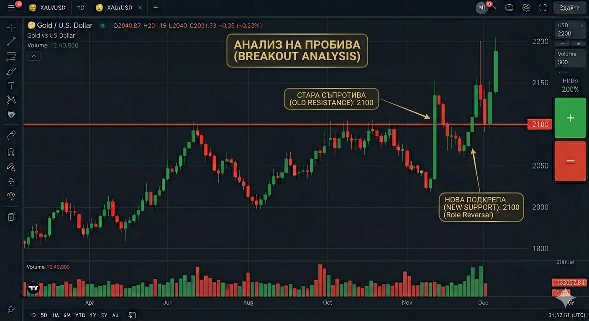

Support
Price falls towards an area where buyers previously appeared and an upward move started or accelerated.
Example
Gold falls to 2,000, holds and rises to 2,050. The area around 2,000 becomes a potential support zone.
Support and resistance are price areas where the market has reacted before. They help you decide where to watch the market; they do not automatically tell you when to buy or sell.
An area where a decline has previously paused or slowed down.
Price falls towards an area where buyers previously appeared and an upward move started or accelerated.
Gold falls to 2,000, holds and rises to 2,050. The area around 2,000 becomes a potential support zone.
An area where an advance has previously stopped or slowed down.
Price rises towards an area where sellers previously appeared and the upward move stalled or turned down.
Gold rises to 2,100, fails to continue and falls to 2,050. The area around 2,100 becomes a potential resistance zone.

The market rarely reacts at exactly the same tick.
When a chart shows several nearby highs or lows, it is more practical to mark an area that contains those reactions rather than treating one price as a magic boundary. Wicks, spread and volatility can create small differences.
Mark the larger zones on D1. Refine them on H4 using the latest visible reactions. On H1, look for confirmation rather than a simple touch.
A former level can sometimes begin to act in the opposite role.
Price breaks above resistance, holds above it and later pulls back. If the area holds, the former resistance may act as support.
Price breaks below support and later moves back up towards it. If it fails to move above the zone, it may act as resistance.

A zone is an area to watch, not an entry signal.
Support can break and resistance can be overcome. Levels are reference areas for possible reactions, not guaranteed reversals.
Price closes below support and then returns to it from underneath. What role might the zone play on the next test?
Answer: It may become resistance if price fails to reclaim and hold above it.